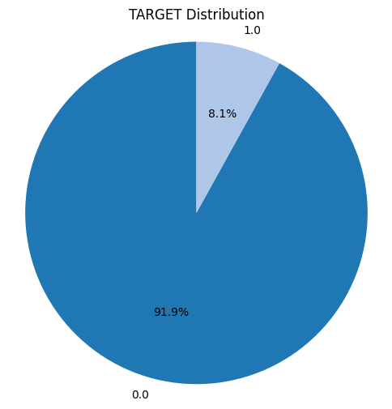
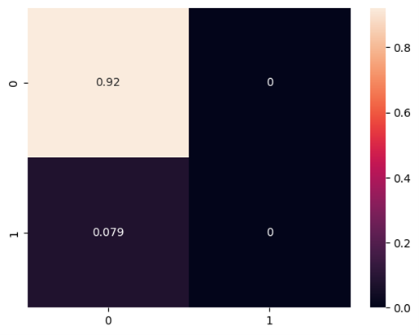
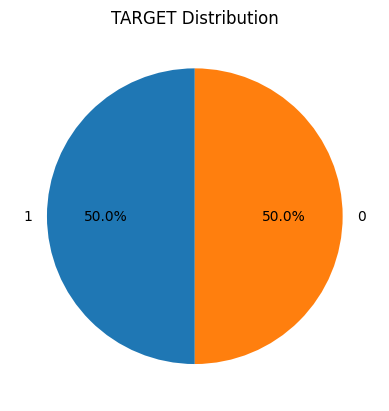
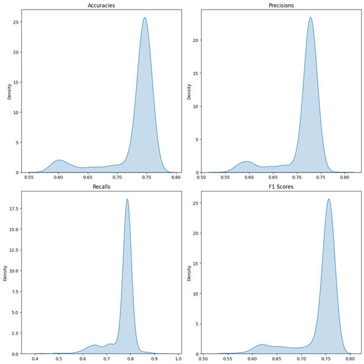
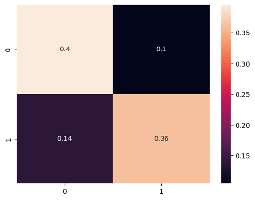

Data Migration to BigQuery
Main Challenges
- Adjustment of categorical variables
- Target variable balancing
Data context
In the previous deliveries an exploratory analysis of the data was performed (delivery 2), in which the following variables were selected:
| Variable | Data Type |
|---|---|
| TARGET | INTEGER |
| NAME_CONTRACT_TYPE | STRING |
| CODE_GENDER | STRING |
| FLAG_OWN_CAR | STRING |
| FALG_OWN_REALTY | STRING |
| CNT_CHILDREN | INTEGER |
| AMT_INCOME_TOTAL | FLOAT |
| AMT_GOODS_PRICE | FLOAT |
| NAME_INCOME_TYPE | STRING |
| NAME_EDUCATION_TYPE | STRING |
| NAME_FAMILY_STATUS | STRING |
| NAME_HOUSING_TYPE | STRING |
| DAYS_BIRTH | FLOAT |
| DAYS_EMPLOYED | FLOAT |
| ORGANIZATION_TYPE | STRING |
Adjustment of categorical variables
All String variables represent not necessarily binary categorical variables, so before migration a conversion process from dummies was performed, which transformed these variables into different columns representing ones and zeros, which is necessary to train the models later.
| Variable | Data Type |
|---|---|
| TARGET | INTEGER |
| CODE_GENDER | INTEGER |
| FLAG_OWN_CAR | INTEGER |
| FLAG_OWN_REALTY | INTEGER |
| CNT_CHILDREN | INTEGER |
| AMT_INCOME_TOTAL | FLOAT |
| AMT_CREDIT | FLOAT |
| AMT_ANNUITY | FLOAT |
| AMT_GOODS_PRICE | FLOAT |
| DAYS_BIRTH | FLOAT |
| DAYS_EMPLOYED | FLOAT |
| NAME_CONTRACT_TYPE | INTEGER |
| NAME_INCOME_TYPE_Pensioner | INTEGER |
| NAME_INCOME_TYPE_Stateservant | INTEGER |
| NAME_INCOME_TYPE_Student | INTEGER |
| NAME_INCOME_TYPE_Unemployed | INTEGER |
| NAME_INCOME_TYPE_Working | INTEGER |
| NAME_EDUCATION_TYPE_Highereducation | INTEGER |
| NAME_EDUCATION_TYPE_Incompletehigher | INTEGER |
| NAME_EDUCATION_TYPE_Lowersecondary | INTEGER |
| NAME_EDUCATION_TYPE_Secondaryseco | INTEGER |
| NAME_EDUCATION_TYPE_Secondarysecondaryspecial | INTEGER |
| NAME_FAMILY_STATUS_Married | INTEGER |
| NAME_FAMILY_STATUS_Separated | INTEGER |
| NAME_FAMILY_STATUS_Singlenotmarried | INTEGER |
| NAME_FAMILY_STATUS_Widow | INTEGER |
| NAME_HOUSING_TYPE_Houseapartment | INTEGER |
| NAME_HOUSING_TYPE_Municipalapartment | INTEGER |
| NAME_HOUSING_TYPE_Officeapartment | INTEGER |
| NAME_HOUSING_TYPE_Rentedapartment | INTEGER |
| NAME_HOUSING_TYPE_Withparents | INTEGER |
| ORGANIZATION_TYPE_Agriculture | INTEGER |
| ORGANIZATION_TYPE_Bank | INTEGER |
| ORGANIZATION_TYPE_BusinessEntityType1 | INTEGER |
| ORGANIZATION_TYPE_BusinessEntityType2 | INTEGER |
| ORGANIZATION_TYPE_BusinessEntityType3 | INTEGER |
| ORGANIZATION_TYPE_Cleaning | INTEGER |
| ORGANIZATION_TYPE_Construction | INTEGER |
| ORGANIZATION_TYPE_Culture | INTEGER |
| ORGANIZATION_TYPE_Electricity | INTEGER |
| ORGANIZATION_TYPE_Emergency | INTEGER |
| ORGANIZATION_TYPE_Government | INTEGER |
| ORGANIZATION_TYPE_Hotel | INTEGER |
Class balancing
We had previously obtained the distribution of the target variable (Loan Performing) and found the following information:

Data which are very unfavorable at the time of making a model that predicts this variable, because this large unbalance does not allow the model to be trained correctly. A test logistic regression model was performed with the unbalanced classes, obtaining the following confusion matrix:
We had previously obtained the distribution of the target variable (Loan Performing) and found the following information:

Calculating the score of this model, it can be said that the results are “satisfactory” because the score of this model will be high thanks to the fact that most of the cases the target will be 0 and the model can predict it very well, while for 1, having a small amount of data regardless of the fact that the model does not hit any case will not affect the overall score but it will still be a bad model. So for this we investigated certain techniques to apply class balancing, arriving at the SMOTE technique (Synthetic Minority Over-sampling Technique).
SMOTE
This technique generates synthetic examples of the minority class, which can be more effective than simply replicating examples. SMOTE is particularly effective in situations where you want to improve the representation of the minority class without simply replicating existing examples. By generating synthetic examples, SMOTE helps the model generalize better and reduces the risk of overfitting. So by applying this technique we arrive at a more favorable distribution.

Finally, the migration to BigQuery can be performed without first adjusting the name of the columns generated by the binarization, eliminating blank spaces and invalid characters.
Model Selection
Now from this, a logistic regression model was trained from the selected input variables and subsequently applying cross-validation, obtaining the following result of its metrics.

From these results it can be determined that the model is acceptably good, its metrics hover around decently high values and do not present several significantly large peaks as to say that the metrics tend to more than one value with great frequency. The following confusion matrix shows how, thanks to the class balancing process, the model's prediction level could be significantly improved.
